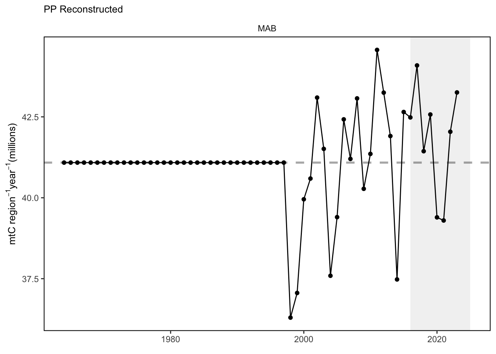
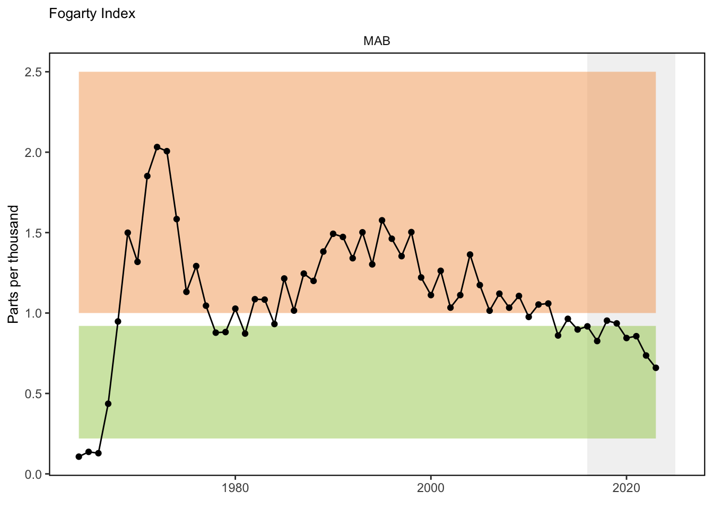
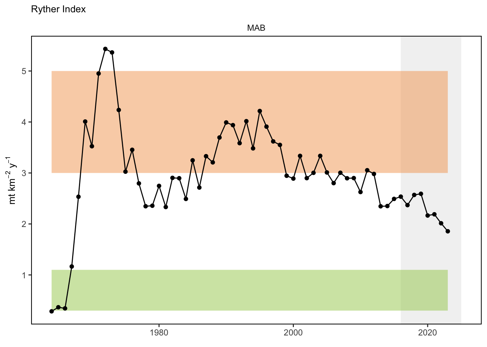
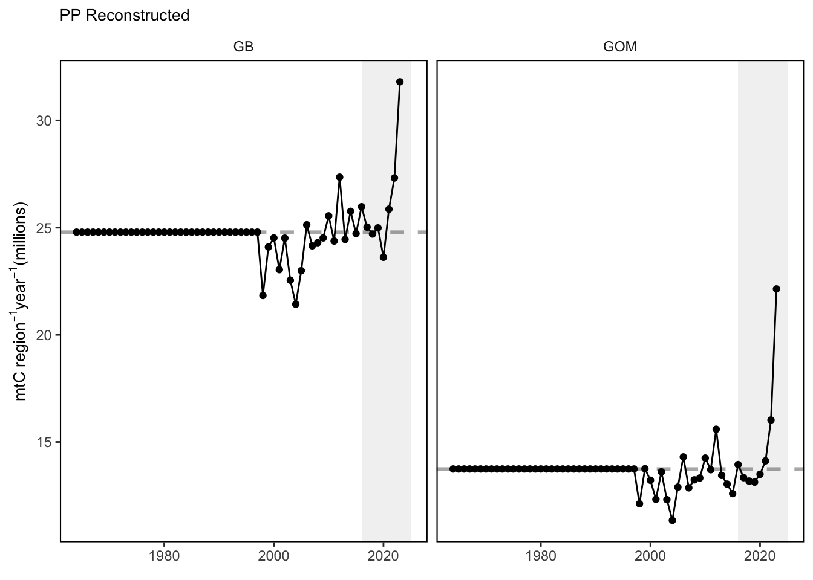
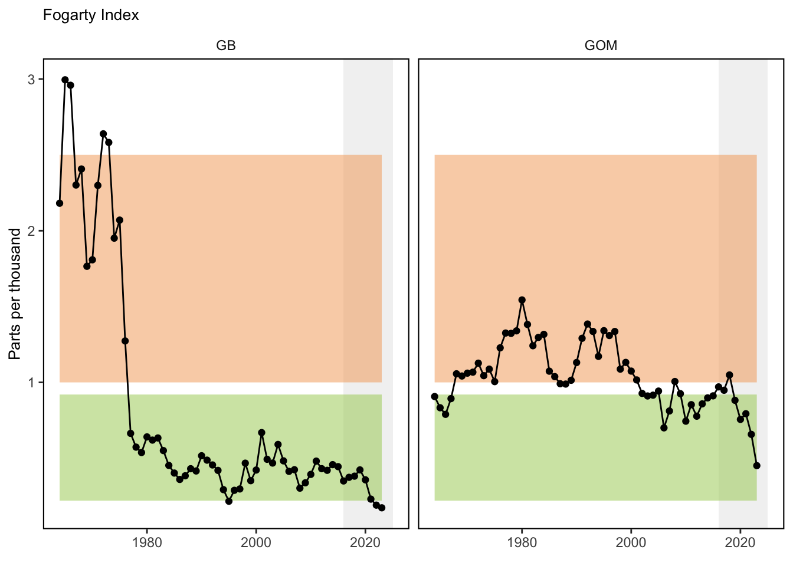
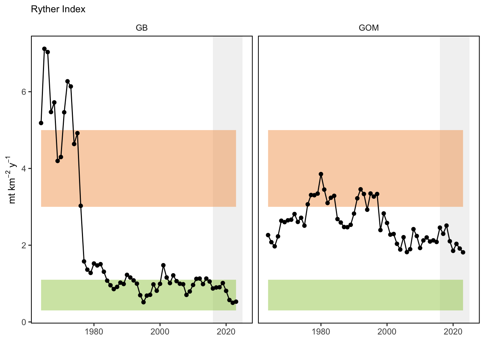

SMART Indicator Report: Ecosytem overfishing
1 Descriptive Section
1.3 Indicator brief description
Ecosystem overfishing is an ecological, and not legal, term that ultimately evaluates how much fish are caught in an ecosystem relative to how much can be produced. Several indices are used to evaluate ecosystem overfishing, the Ryther index, the Fogarty index, and primary production required.
1.4 Indicator visualization
Compared to thresholds based on global estimates of primary production and catch, the Ryther index shows elevated levels of fishing in the Gulf of Maine and the Mid Atlantic but not at a point considered “extreme” [116]. When accounting for regional primary productivity the Fogarty index shows low levels of fishing relative to these global thresholds. Thresholds based on regional estimates of primary productivity, are not yet available. This work is ongoing

2 SMART Attribute Section
2.1 Indicator documentation
2.1.1 Are indicators available for others to use (data downloadable)?
Yes
2.1.1.1 Where can indicators be found?
Data: https://noaa-edab.github.io/ecodata/index.html
Description: https://noaa-edab.github.io/catalog/ppr.html
Technical documentation: https://noaa-edab.github.io/tech-doc/ppr.html
2.1.1.2 How often are they updated? Are future updates likely?
[need sequential look at datasets for update frequency. Future requires judgement]
2.1.2 Gather indicator statistics
2.1.2.2 Length of time series, start and end date, periodicity
General overview: Annual
Indicator specifics:
Indicator | EPU | StartYear | EndYear | NumYears | MissingYears |
|---|---|---|---|---|---|
Fogarty | GB | 1964 | 2023 | 60 | 0 |
Fogarty | GOM | 1964 | 2023 | 60 | 0 |
Fogarty | MAB | 1964 | 2023 | 60 | 0 |
PP | GB | 1964 | 2023 | 60 | 0 |
PP | GOM | 1964 | 2023 | 60 | 0 |
PP | MAB | 1964 | 2023 | 60 | 0 |
Ryther | GB | 1964 | 2023 | 60 | 0 |
Ryther | GOM | 1964 | 2023 | 60 | 0 |
Ryther | MAB | 1964 | 2023 | 60 | 0 |
2.1.2.3 Spatial location, scale and extent
General overview: EPU
Indicator specifics:
Indicator | EPU |
|---|---|
Fogarty | GB |
Fogarty | GOM |
Fogarty | MAB |
PP | GB |
PP | GOM |
PP | MAB |
Ryther | GB |
Ryther | GOM |
Ryther | MAB |
2.1.3 Are methods clearly documented to obtain source data and calculate indicators?
Yes
2.1.3.1 Can the indicator be calculated from current documentation?
Landings are extracted from the commercial fisheries database (CFDBS) using the methods described in the chapter Commercial Landings Data. Trophic level information for each species is obtained from fishbase and sealifebase using the R package rfishbase (Froese and Pauly 2019) in tandem with the package eofindices. Primary Production is estimated using the methods described in the chapter Chlorophyll a and Primary Production.
Annual (wet weight) landings are calculated for each species for a given EPU. For each year the landings are sorted in descending order by species and the cumulative landings are calculated. The species that accounted for the top 80% of total cumulative landings are selected. The trophic level for each of these species are then obtained from fishbase/sealifebase. At this point the PPR index is calculated. The units of the index are \(gCyear^{-1}\) for the EPU. The index is converted to \(gCm^{-2}year^{-1}\) by dividing by the area (in \(m^2\)) of the EPU.
2.1.4 Are indicator underlying source data linked or easy to find?
Source data is not publicly availabe due to PII restrictions.
2.1.4.1 Where are source data stored?
Data for this index come from a variety of sources. The landings data come from the Commercial Fishery Database (CFDBS), species trophic level information come from fishbase and sealifebase, and primary production estimates are derived from satellites. Some of these data are typically not available to the public.
2.1.4.2 How/by whom are source data updated? Are future updates likely?
Andrew Beet, andrew.beet@noaa.gov
[likelihood of source data updates requires judgement, enter by hand]
2.2 Indicator analysis/testing or history of use
2.2.1 What decision or advice processes are the indicators currently used in?
The Ryther index is defined as total catch per unit area in the ecosystem [116]. The units are mt km^-2 year^-1. It measures the total removal of fish biomass by area in a Large Marine Ecosystem relative to how much that entire ecosystem can produce. In general terms, the lower the Ryther index, the less likely an ecosystem will be experiencing ecosystem overfishing. The Fogarty index is defined as ratio of total catches to total primary productivity in an ecosystem [116]. The units are parts per thousand. A modification of the indices are used. Total landings are used in lieu of total catch. Accountng for total IUU (Illegal, unreported, and unregulated fishing) data, at the spatial footprint required, is not currently available. This will have the effect of reducing the value of the index (compared to using total catch, including IUU).
2.2.2 What implications of the indicators are currently listed?
There is insufficient evidence to determine whether ecosystem overfishing in occuring in our region. However the overall amount of ecosytem fishing has been declining over the past several years.
2.2.3 Do target, limit, or threshold values already exist for the indicator?
Target, limit, or threshold terms detected
2.2.4 Have the indicators been tested to ensure they respond proportionally to a change in the underlying process?
No
3 SMART rating
Category | Indicator | Element | Attribute | Rating | ElementRating | OverallRating |
|---|---|---|---|---|---|---|
Fishery | Ecosytem overfishing | Specific | Described | 1.0 | 0.6666667 | 0.6833333 |
Fishery | Ecosytem overfishing | Specific | Units | 1.0 | 0.6666667 | 0.6833333 |
Fishery | Ecosytem overfishing | Specific | Spatial | 1.0 | 0.6666667 | 0.6833333 |
Fishery | Ecosytem overfishing | Specific | Uncertainty | 0.0 | 0.6666667 | 0.6833333 |
Fishery | Ecosytem overfishing | Specific | Methods | 1.0 | 0.6666667 | 0.6833333 |
Fishery | Ecosytem overfishing | Specific | Code | 0.0 | 0.6666667 | 0.6833333 |
Fishery | Ecosytem overfishing | Measurable | Available | 1.0 | 1.0000000 | 0.6833333 |
Fishery | Ecosytem overfishing | Measurable | Online | 1.0 | 1.0000000 | 0.6833333 |
Fishery | Ecosytem overfishing | Measurable | Contact | 1.0 | 1.0000000 | 0.6833333 |
Fishery | Ecosytem overfishing | Measurable | SourceDat | 1.0 | 1.0000000 | 0.6833333 |
Fishery | Ecosytem overfishing | Measurable | SourceAvail | 1.0 | 1.0000000 | 0.6833333 |
Fishery | Ecosytem overfishing | Measurable | SourceContact | 1.0 | 1.0000000 | 0.6833333 |
Fishery | Ecosytem overfishing | Achievable | Tested | 0.0 | 0.0000000 | 0.6833333 |
Fishery | Ecosytem overfishing | Achievable | Sensitivity | 0.0 | 0.0000000 | 0.6833333 |
Fishery | Ecosytem overfishing | Achievable | TimeLag | 0.0 | 0.0000000 | 0.6833333 |
Fishery | Ecosytem overfishing | Relevant | Advice | 1.0 | 1.0000000 | 0.6833333 |
Fishery | Ecosytem overfishing | Relevant | Implications | 1.0 | 1.0000000 | 0.6833333 |
Fishery | Ecosytem overfishing | Relevant | TargThresh | 1.0 | 1.0000000 | 0.6833333 |
Fishery | Ecosytem overfishing | Timebound | Frequency | 1.0 | 0.7500000 | 0.6833333 |
Fishery | Ecosytem overfishing | Timebound | Updated | 0.5 | 0.7500000 | 0.6833333 |
3.1 Comments
[Fill below by hand once above data complete]
3.1.1 Additional potential links to management in addition to uses listed above
3.1.2 What additional work would be needed for the Council to use the indicator?
3.1.3 What issues are caused if there is a gap or delay in data underlying the indicator